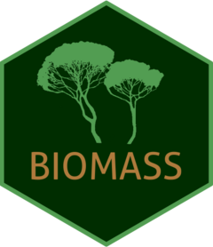

Propagating above ground biomass (AGB) or carbon (AGC) errors to the stand level
Source:R/AGBmonteCarlo.R
AGBmonteCarlo.RdPropagation of the errors throughout the steps needed to compute AGB or AGC, supporting user AGB allometry.
Usage
AGBmonteCarlo(
D,
WD = NULL,
errWD = NULL,
H = NULL,
errH = NULL,
HDmodel = NULL,
coord = NULL,
Dpropag = NULL,
n = 1000,
Carbon = FALSE,
Dlim = NULL,
fitted_allom = "chave2014",
var_in_data = NULL,
volume_allom = FALSE,
return_volume = FALSE
)Arguments
- D
Vector of tree diameters (in cm)
- WD
Vector of wood density estimates (in g/cm3)
- errWD
Vector of error associated to the wood density estimates (should be of the same size as
WD)- H
(option 1) Vector of tree heights (in m). If set,
errHmust be set too.- errH
(if
H) Residual standard error (RSE) of a model or vector of errors (sd values) associated to tree height values (in the latter case the vector should be of the same length asH).- HDmodel
(option 2) Model used to estimate tree height from tree diameter (output from
modelHD(), see example).- coord
(option 3, only used with
"chave2014"allometry) Coordinates of the site(s), either a vector giving a single site (e.g. c(longitude, latitude)) or a matrix/dataframe with two columns (e.g. cbind(longitude, latitude)). The coordinates are used to predict height-diameter allometry with bioclimatic variables.- Dpropag
This variable can take three kind of values, indicating how to propagate the errors on diameter measurements: a single numerical value or a vector of the same size as
D, both representing the standard deviation associated with the diameter measurements or"chave2004"(an important error on 5 percent of the measures, a smaller error on 95 percent of the trees).- n
Number of iterations. Cannot be smaller than 50 or larger than 1000. By default
n = 1000- Carbon
(logical) Whether or not the propagation should be done up to the carbon value (FALSE by default).
- Dlim
(optional) Minimum diameter (in cm) for which above ground biomass should be calculated (all diameter below
Dlimwill have a 0 value in the output).- fitted_allom
Can be three types of values, indicating the AGB allometry that will be used to compute tree AGB:
"chave2014"(pantropical Chave's allometry, default value), or a brms.fit object of a fitted allometry, or a list of 3 objects (a formula, a data.frame of fitted parameters values, a character value specifying if the response is log scaled). See Details below for supported user allometries.- var_in_data
(Needed when
"fitted_allom"is a brms.fit object) A vector of characters among :"AGB","logAGB","V","logV","H","logH","D","logD","WD"standing for variables (including response & predictors) used in fitting procedure, corresponding to"fitted_allom$data", variables order MUST match variables order of"colnames(fitted_allom$data)".- volume_allom
(logical) Whether the response of the allometry model is AGB or volume (V). By default
volume_allom = FALSE- return_volume
(logical) Whether the returned output should be AGB or volume (V). By default
return_volume = FALSE
Value
Returns a list with (if Carbon is FALSE):
meanAGB: Mean stand AGB value following the error propagationmedAGB: Median stand AGB value following the error propagationsdAGB: Standard deviation of the stand AGB value following the error propagationcredibilityAGB: Credibility interval at 95\AGB_simu: Matrix with the AGB of the trees (rows) times the n iterations (columns)AGB_simu_per_stem: Dataframe with mean, median, sd, 2.5 and 97.5\ following the error propagation at individual tree level.
Details
See Rejou-Mechain et al. (2017) for all details on the error propagation procedure.
Supported types of AGB allometry, and how to properly specify it:
brms.fit object: response must be (log)AGB or (log)V (volume); predictors must be among (log)height H (logH), (log)diameter D (logD), wood density WD; group level effect not supported;
formula & parameters: list(formula = NULL, parameters = NULL, link = NULL) formula = ~ param1 * H ..., can be any function of variables H, D, WD; parameters = data.frame(param1 = , param2 = , ..., sigma =); link = NULL or "log"; variables in the formula must be among
"H","D","WD"; column names of parameters must match parameters names in formula; a Gaussian error model is assumed on mean response, with"sigma"as standard deviation.
Author
Dominique LAMONICA, Maxime REJOU-MECHAIN, Bruno HERAULT, Camille PIPONIOT, Ariane TANGUY, Arthur PERE
Examples
# Load a database
data(NouraguesHD)
data(NouraguesTrees)
# Modelling height-diameter relationship
HDmodel <- modelHD(D = NouraguesHD$D, H = NouraguesHD$H, method = "log2", bayesian = FALSE)
# Retrieving wood density values
# \donttest{
NouraguesWD <- getWoodDensity(NouraguesTrees$Genus, NouraguesTrees$Species,
stand = NouraguesTrees$Plot
)
#> Your taxonomic table contains 409 taxa
#> Warning: 142 taxa don't match the Global Wood Density Database V2. You may provide 'family' to match wood density estimates at family level.
# }
## Allometry Chave 2014 equation
# Propagating errors with a standard error for Wood density
# \donttest{
resultMC <- AGBmonteCarlo(
D = NouraguesTrees$D, WD = NouraguesWD$meanWD,
errWD = NouraguesWD$sdWD, HDmodel = HDmodel
)
# }
# If only the coordinates are available
coord <- c(-52.683213,4.083024 )
# \donttest{
resultMC <- AGBmonteCarlo(
D = NouraguesTrees$D, WD = NouraguesWD$meanWD,
errWD = NouraguesWD$sdWD, coord = coord
)
# }
# Propagating errors with a standard error in wood density in all plots at once
# \donttest{
NouraguesTrees$meanWD <- NouraguesWD$meanWD
NouraguesTrees$sdWD <- NouraguesWD$sdWD
resultMC <- by(
NouraguesTrees, NouraguesTrees$Plot,
function(x) AGBmonteCarlo(
D = x$D, WD = x$meanWD, errWD = x$sdWD,
HDmodel = HDmodel, Dpropag = "chave2004"
)
)
meanAGBperplot <- unlist(sapply(resultMC, "[", 1))
credperplot <- sapply(resultMC, "[", 4)
# }
## User allometry implemented with a brms.fit object
closeAllConnections()